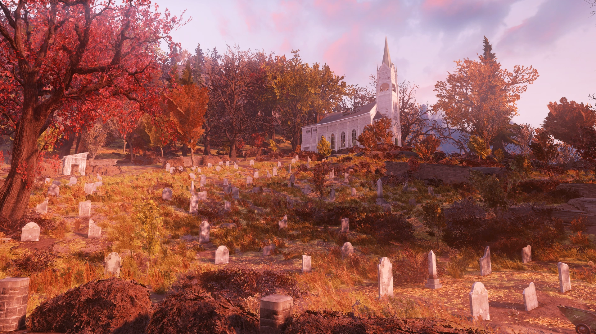
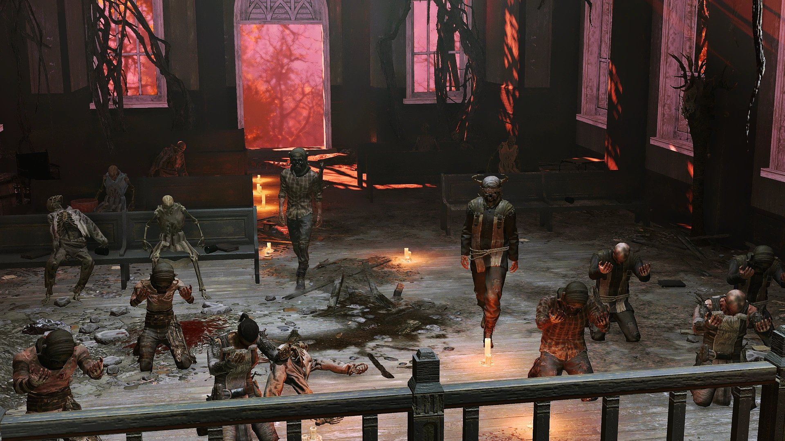
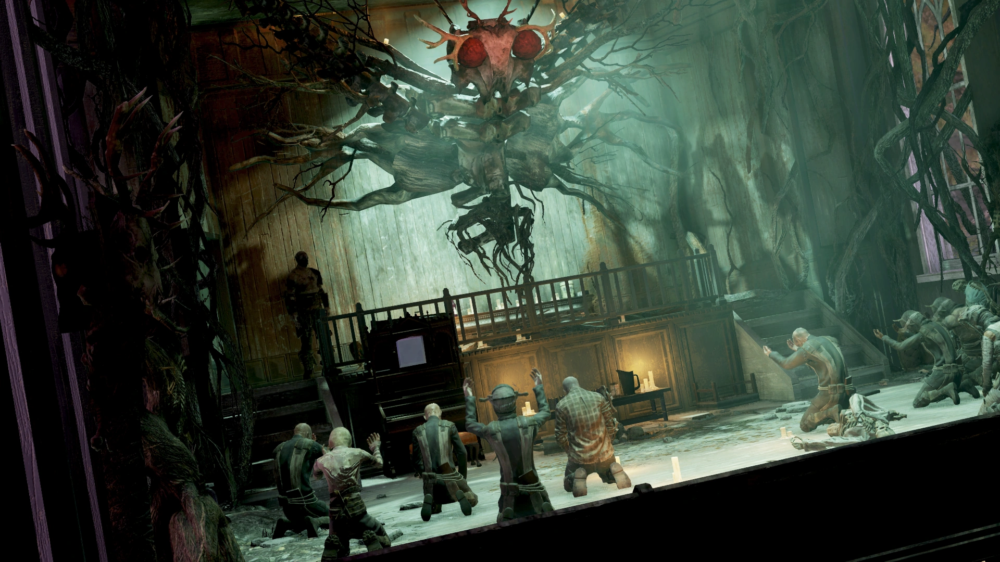
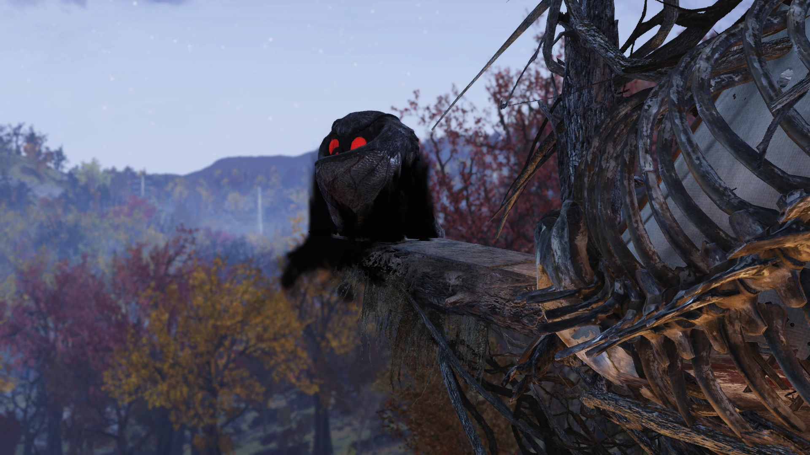
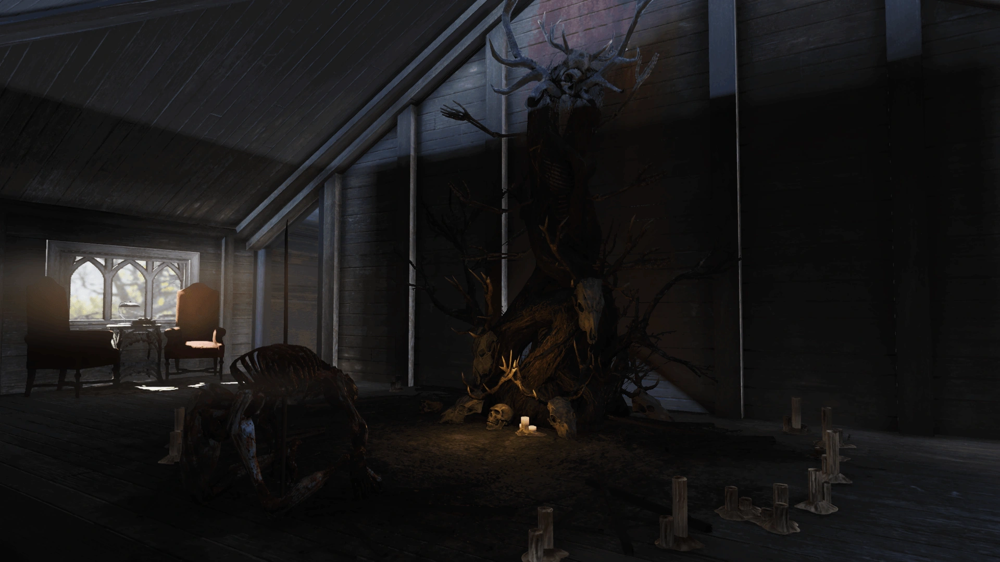
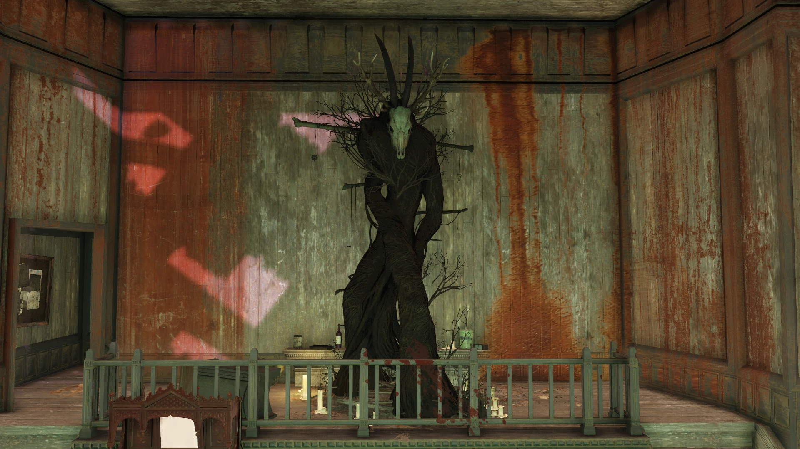
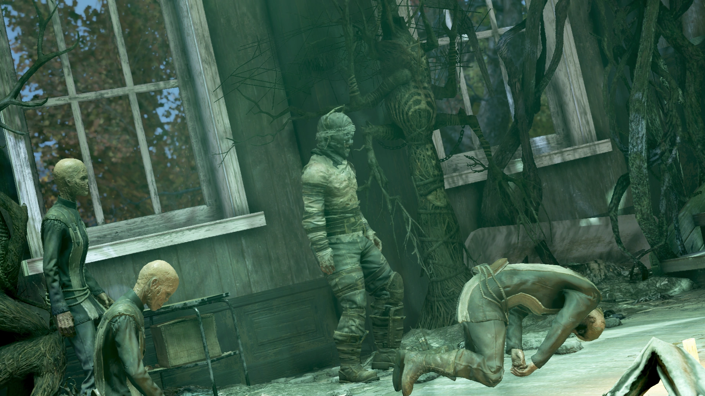
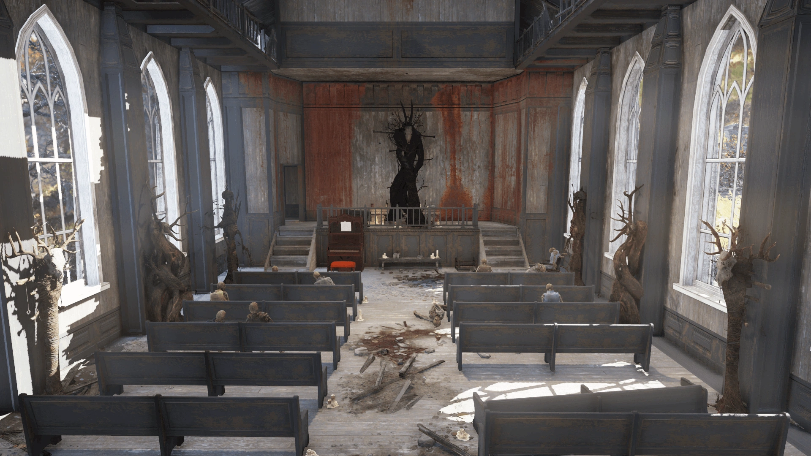

Kanawha County Cemetery
カナワ郡墓地
概要
カナワ郡墓地は、アパラチアの森林地帯にあるロケーションです。
背景
大戦後のある時期、カナワ教会の信徒たちは集団自殺協定の一環としてネズミ駆除剤を服毒しました。
時期は不明ですが、モスマン教団が霊廟近くの大きな小屋に小さな祠を作り、教会内にトーテムを建てました。
それから2103年まで、墓地には昆虫しか住んでいませんでしたが、「翼ある者の信徒たち」がこの地域に再び姿を現し、ここに定住しました。
彼らはこれを墓地への「帰還」と考えており、以前この場所で活動していたことを匂わせています。
彼らの帰還の動機の一つは霊廟への関心でした。
カルティストたちは、封印された墓に昆虫学者ウォレス博士の著作が眠っているのではないかと期待していたのです。
博士の遺体はそこに納められていました。
その後、礼拝堂はカルティストの活動の温床となり、人身御供も行われるようになりました。
2階の奥の部屋には串刺しにされた遺体が証拠として残されています。
夜になると、最大10人のカルティストが教会に集まり礼拝を行い、11人目のNPCが前方に立って儀式を監督します。
さらに墓地のパトロールを続けるカルティストもいます。
数分ごとに教会内のカルティストが一斉にアニメーションを変え、一部が突然死亡します。
これは夜明けまで数分ごとに繰り返され、生き残ったNPCは墓地に向かって退出します。
時折、夜にモスマンが教会の止まり木に出現し、カルティストたちがその下に集まって崇拝します。
屋根の上にも1〜2人が現れ、モスマンに向かって祈りを捧げることがあります。
レイアウト
カナワ教会は、カナワ郡墓地の南側に目立つように建っています。
駐車場から丘を上った場所にあり、墓地を見渡しています。
カルティストたちは墓地最大の木の根を教会まで導き、蔦で覆い尽くしました。
天然素材で構造を強化し、宗教儀式でモスマンを崇拝する拠点を築いています。
内部の壁には神の彫像が並び、祭壇の上には巨大なモスマンのアイコンが建てられています。
礼拝席には、そこで命を落とした信者の骸骨がまだ残っています。
祭壇の下の低いベンチには10個のグラスがネズミ駆除剤の容器と並んで置かれています。
2階には祠が隠されており、建物の頂上へのアクセスが可能です。
奥の部屋は、そびえ立つトーテムの前に皮を剥がれ串刺しにされた遺体が中心に飾られています。
この小さな部屋にはカメラとスティムパックがあります。
梁を伝っていくと尖塔にアクセスでき、牧師の祭服が弾薬箱の横に置かれています。
尖塔の階段は2階の通路から直接たどり着けず、木の成長により塞がれているため、頂上からのみアクセスできます。
広々とした墓地のもう一つの注目点は、中央パビリオンのウォレス博士の墓です。
スコーチ疫病以前にこの霊廟に住んでいた人物がいたようで、2102年には調理台と寝袋が置かれていました。
墓にはファーストエイド、フットロッカー、スーツケースもあります。
北の小屋はロウソクとモスマンの卵に囲まれた別の祠に改造されており、門の近くには管理事務所があります。
敷地の東端にある用具小屋にはセメント袋5個、肥料袋3個、ペンキ缶3個、大型工具箱とシャベルが入っています。
このエリアにはすすの花、ファイアキャップ、シャクナゲ、テイトーの採取ポイントもあります。
主なアイテム
- 手紙（メモ、Wastelanders） — 教会2階の机の上
- 説教のメモ（メモ、Wastelanders） — 教会内の倒れた説教台の上
- カナワ霊廟の鍵（Wastelanders） — 教会2階の机、手紙の隣。霊廟は墓地の中央にあります
- 雑誌（ランダム） — 教会内の礼拝席の上
発見できるメモ
手紙（Wastelanders）
場所：教会2階の奥の部屋、角の机の上
ローランド、
一行はウォレス博士を探してカナワ教会に戻ってきた。
墓地の霊廟に彼の遺骨が収められていると考えている。
彼はこの地域の蛾を研究しながら論文を書いた有名な昆虫学者で、我々のすべての疑問に対する答えを持っているかもしれない。
彼の論文を見つける試みは今まで失敗してきたが、遺品と一緒に埋葬されている可能性もある。
望み薄なのは分かっているが、それが鍵になるかもしれない。
我々の説教に一度来て、教会を見てほしい。
敷地内には卵の備蓄もある。かき集めて教会に運んできたんだ。あの方が来てくれることを願って。
あなたをゲストとして迎えることで、我々の活動の幅が広がるだろう。
説教のメモ（Wastelanders）
場所：教会内の祠近く、小さな説教台の上
聞きなさい、我が信徒たちよ。
私はあなたがたを信じる者ではなく、従う者と呼ぶ。
我々はもはや信じる者ではなく、この新しい始まりにおいて従う者なのだ。
目を開きなさい。耳を開きなさい。そして心を開きなさい。
アパラチアのすべての新たな住人たちから聞いたことがないのか？
目撃は本物であり、遭遇は真実なのだ。
我々は森の恵みを捧げる。
我々が築き、広がるにつれて、あの方に近づいていく。
人間の災いから離れて。上を見よ。
我々は成長する
あの方に向かって広がる。
あの方はそこにいる。あの方は来る。そして我々はそこにいるだろう。
補足
- カルティストたちはウォレス博士の墓を暴き、アパラチア地方の蛾に関する博士論文を手に入れようとしました。
著書『ウォレスの論文について』の中で、啓発派の著者「髭の賢者マーティン」は、この考えを完全に見当違いだと批判しています。
基本的な哲学的・方法論的な不同意に加え、ウォレスの博士論文が著者の墓に封印されていると考える理由はなく、むしろ彼を認定した教育機関の図書館から探すべきだと指摘しています。- メモ「手紙」には、論文を探す過去の試みが言及されており、著者は論文が墓にあるのは「望み薄」だと考えていました。
- 教会の奥の部屋では、周囲の野生動物の環境音が劇的に低くなり、独特の環境音が聞こえてきます。
登場作品
カナワ郡墓地はFallout 76にのみ登場します。
ギャラリー








カナワ郡墓地は、Fallout 76で最も不気味で魅力的なロケーションの一つです。
昼間に訪れても教会に蔓延する蔦と暗い雰囲気に圧倒されますが、真の体験は夜に訪れることで得られます。
夜になると最大10人のカルティストが教会に集まり、不気味な礼拝を始めます。
数分ごとに一部が突然倒れていく様は、見ているだけで背筋が凍ります。
そして時折、教会の尖塔にモスマン本体が出現する——その瞬間の衝撃は筆舌に尽くしがたいものがあります。
重層的なロアも見事です。
戦前の信徒たちの集団自殺、ウォレス博士の論文を巡るカルティストの狂信、そしてWastelandersで追加された説教メモに至るまで。
「我々は成長する。あの方に向かって広がる」——この一節に、モスマン教団の狂気と、不思議な美しさが同居しています。
This article was created by translating and editing Kanawha County Cemetery from Nukapedia: The Fallout Wiki.
Licensed under the Creative Commons Attribution-Share Alike License (CC BY-SA 3.0).
コミュニティ維持のため、寄付を受け付けております。
> COMMENTS